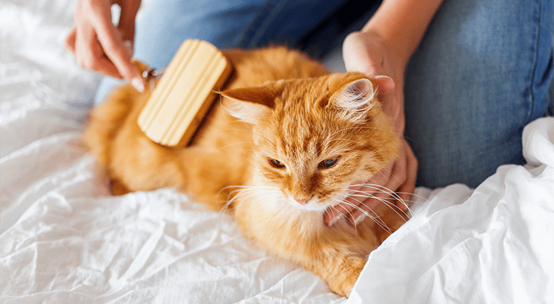
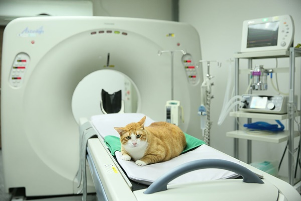
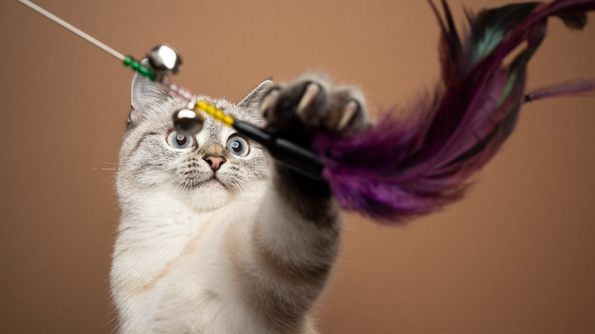
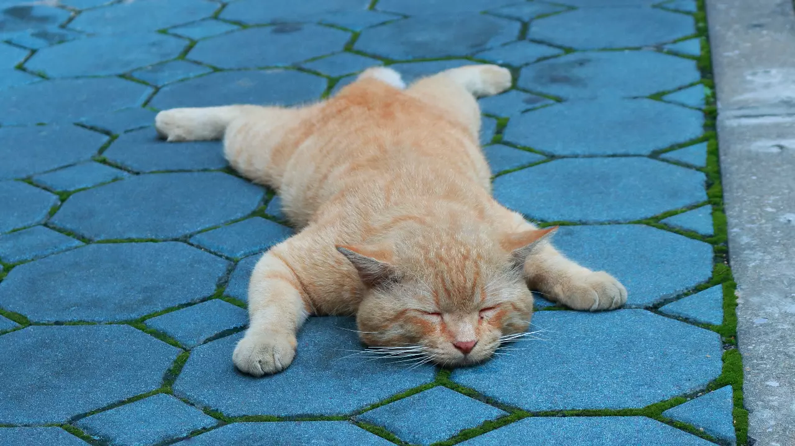

การเลี้ยงแมวอาจเป็นเรื่องที่ท้าทายแต่ก็สามารถเรียนรู้กันได้
เมื่อคุณเข้าใจและคุ้นเคยกับวิธีดูแลแมวแล้ว คุณจะรู้ว่าการเลี้ยงแมวนั้นค่อนข้างสนุกและผ่อนคลาย
การดูแลเอาใจใส่สัตว์เลี้ยง นั้นเป็นสิ่งสำคัญ โดยเฉพาะอย่างยิ่งด้านสุขภาพ ซึ่งสำหรับผู้ที่ต้องการให้น้องแมวมีสุขภาพ
ที่แข็งแรง และมีภูมิคุ้มกันที่ดี นั่นก็คือการฉีดวัคซีนแมว

เมื่อคุณก็อยากจะหาคลินิก หรือโรงพยาบาลสัตว์ที่ไว้ใจ
คุณก็จำเป็นต้องหาข้อมูลในเรื่องต่างๆ ไม่ว่าจะเป็นในเรื่อง
การดูแลรักษา ระยะทางเมื่อเกิดเหตุฉุกเฉิน หรือแม้กระทั่งราคา
ใครที่ต้องสังเกตท่าทางของน้องแมว อยากรู้ว่าตอนนี้น้องแมวกำลังรู้สึกยังไง พร้อมให้เล่นด้วยหรือไม่ ถ้าจู่ ๆ ไปเล่นตอนที่แมวอารมณ์บ่จอย ก็อาจจะได้แผลกลับมาก็ได้ มีวิธีสังเกตท่าทางน้องแมวง่าย ๆ ว่าแต่ละท่าทางนั้นบ่งบอกอะไรบ้าง
Read moreในทุกๆวัน แมวทำอะไรบ้าง

มีพลังที่เหลือล้น ไม่รู้จักเหนื่อย

1 วัน มี 24 ชม. แมวนอนไปแล้ว 28 ชม.
ข้าวหมดแล้ว ทาสเติมด่วนนนน
ทำตัวน่ารักให้เหล่าทาสโดนตก